History Teaching Terms
Please scan the terms to find what you are looking for - they are not in order!
.pdf (. . . )


History (from Greek ἱστορία - historia, meaning "inquiry, knowledge acquired by investigation") is the discovery, collection, organization, and presentation of information about past events. History can also mean the period of time after writing was invented. Scholars who write about history are called historians. It is a field of research which uses a narrative to examine and analyse the sequence of events, and it sometimes attempts to investigate objectively the patterns of cause and effect that determine events. Historians debate the nature of history and its usefulness. This includes discussing the study of the discipline as an end in itself and as a way of providing "perspective" on the problems of the present. The stories common to a particular culture, but not supported by external sources (such as the legends surrounding King Arthur) are usually classified as cultural heritage rather than the "disinterested investigation" needed by the discipline of history. Events of the past prior to written record are considered prehistory. (wikipedia.org)

Pedagogy is the study of being a teacher or the process of teaching. The term generally refers to strategies of instruction, or a style of instruction. Pedagogy is also occasionally referred to as the correct use of instructive strategies (see instructional theory). . . In correlation with those instructive strategies the instructor's own philosophical beliefs of instruction are harbored and governed by the pupil's background knowledge and experience, situation, and environment, as well as learning goals set by the student and teacher. (wikipedia.org)


Creative Pedagogy is the science and art of creative teaching. It is a sub-field of Pedagogy. . . Creative Pedagogy teaches learners how to learn creatively, become creators of themselves and creators of their future. . .Creative Pedagogy should be differentiated from Creative Education that is usually associated with teaching creativity as a subject. Creative Pedagogy, on the contrary, can be applied to ANY subject, whether it is Math, Science, Language, or Economics and Finance. To some extent, one can state that subject does not matter, methodology (type of pedagogy) does: that’s why the introduction of creative methodologies changes the process of teaching/learning. . . The founder of Creative Pedagogy, Dr. Andrei Aleinikov, defined it in the form of formula of invention – a strict word pattern used to describe inventions for patenting in technology: “Creative pedagogy that includes educational influence on the learner for acquisition of certain study material (subject) [as pedagogy in general] and differing from the above by the fact that in order to achieve higher efficiency of learning, the pedagogical influence is provided on the background of centrifugal above-the-criticism mutual activity in which the learner is raised from the object of [pedagogical] influence to the rank of a creative person, while the traditional (basic) study material is transformed from the subject to learn into the means of achieving some creative goal, and the extra study material includes the description and demonstration of the heuristic methods and techniques.” . . . The goal of Creative Pedagogy is to transform ANY subject class (course, program, school) into a creative teaching process that would produce creative learners (life learners) – much more efficient learners than those produced by traditional school. This transformation of the traditional class (course, program, school) is called “creative orientation.” (wikipedia.org)


Critical pedagogy is a philosophy of education described by Henry Giroux as an "educational movement, guided by passion and principle, to help students develop consciousness of freedom, recognize authoritarian tendencies, and connect knowledge to power and the ability to take constructive action." Based in Marxist theory, critical pedagogy draws on radical democracy, anarchism, feminism, and other movements that strive for what they describe as social justice. Critical pedagogue Ira Shor defines critical pedagogy as: "Habits of thought, reading, writing, and speaking which go beneath surface meaning, first impressions, dominant myths, official pronouncements, traditional clichés, received wisdom, and mere opinions, to understand the deep meaning, root causes, social context, ideology, and personal consequences of any action, event, object, process, organization, experience, text, subject matter, policy, mass media, or discourse." . . . Critical pedagogy includes relationships between teaching and learning. This proponents claim that it is a continuous process of what they call "unlearning," "learning" and "relearning," "reflection," "evaluation," and the impact that these actions have on the students, in particular students whom they believe have been historically and continue to be disenfranchised by what they call "traditional schooling." Philosopher John Searle suggests that, despite the "opaque prose" and lofty claims of proponents, the true goal of critical pedagogy is "to create political radicals". (wikipedia.org)
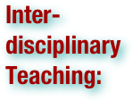

Interdisciplinary teaching is a method, or set of methods, used to teach a unit across different curricular disciplines. For example, the seventh grade Language Arts, Science and Social Studies teachers might work together to form an interdisciplinary unit on rivers. The local river system would be the unifying idea, but the English teacher would link it to Language Arts by studying river vocabulary and teaching students how to do a research report. The science teacher might teach children about the life systems that exist in the river, while the Social Studies teacher might help students research the local history and peoples who used the river for food and transport. There are many different types, or levels, of interdisciplinary teaching. On one end, schools might employ an interdisciplinary team approach, in which teachers of different content areas assigned to one group of students who are encouraged to correlate some of their teaching (Vars, 1991). The most common method of implementing integrated, interdisciplinary instruction is the thematic unit, in which a common theme is studied in more than one content area (Barton & Smith, 2000). The example given above about rivers would be considered multidisciplinary or parallel design, which is defined as lessons or units developed across many disciplines with a common organizing topic (Jackson & Davis, 2000). One of the foremost scholars of interdisciplinary teaching techniques is James Beane, who advocates for curriculum integration, which is curriculum that is collaboratively designed around important issues. It has four major components: the integration of experiences, social integration, the integration of knowledge, and integration as a curriculum design. It differs from other types of interdisciplinary teaching in that it begins with a central theme that emerges from questions or social concerns students have, without regard to subject delineations (Beane, 1997). (wikipedia.org)

How to define intelligence is controversial. Groups of scientists have stated the following:
1.from "Mainstream Science on Intelligence" (1994), an editorial statement by fifty-two researchers: A very general mental capability that, among other things, involves the ability to reason, plan, solve problems, think abstractly, comprehend complex ideas, learn quickly and learn from experience. It is not merely book learning, a narrow academic skill, or test-taking smarts. Rather, it reflects a broader and deeper capability for comprehending our surroundings—"catching on," "making sense" of things, or "figuring out" what to do
2.from "Intelligence: Knowns and Unknowns" (1995), a report published by the Board of Scientific Affairs of the American Psychological Association: Individuals differ from one another in their ability to understand complex ideas, to adapt effectively to the environment, to learn from experience, to engage in various forms of reasoning, to overcome obstacles by taking thought. Although these individual differences can be substantial, they are never entirely consistent: a given person's intellectual performance will vary on different occasions, in different domains, as judged by different criteria. Concepts of "intelligence" are attempts to clarify and organize this complex set of phenomena. Although considerable clarity has been achieved in some areas, no such conceptualization has yet answered all the important questions, and none commands universal assent. Indeed, when two dozen prominent theorists were recently asked to define intelligence, they gave two dozen, somewhat different, definitions. (wikipedia.org)


The theory of multiple intelligences was proposed by Howard Gardner in 1983 as a model of intelligence that differentiates intelligence into various specific (primarily sensory) modalities, rather than seeing it as dominated by a single general ability. Gardner argues that there are a wide variety of cognitive abilities which are only very weakly correlated with one another, despite the close correlations between aspects of intelligence generally measured by traditional intelligence (IQ) tests or psychometrics. For example, the theory predicts that a child who learns to multiply easily is not necessarily generally more intelligent than a child who has more difficulty on this task. The child who takes more time to master simple multiplication 1) may best learn to multiply through a different approach, 2) may excel in a field outside of mathematics, or 3) may even be looking at and understand the multiplication process at a fundamentally deeper level. Such a fundamentally deeper understanding can result in what looks like slowness and can hide a mathematical intelligence potentially higher than that of a child who quickly memorizes the multiplication table despite a less detailed understanding of the process of multiplication. The theory has been met with mixed responses. Empirical evidence reveals high correlations between different tasks (rather than the low correlations which Gardner's theory predicts). Nevertheless many educationalists support the practical value of the approaches suggested by the theory. (wikipedia.org)

Educational assessment is the process of documenting, usually in measurable terms, knowledge, skills, attitudes and beliefs. Assessment can focus on the individual learner, the learning community (class, workshop, or other organized group of learners), the institution, or the educational system as a whole. According to the Academic Exchange Quarterly: "Studies of a theoretical or empirical nature (including case studies, portfolio studies, exploratory, or experimental work) addressing the assessment of learner aptitude and preparation, motivation and learning styles, learning outcomes in achievement and satisfaction in different educational contexts are all welcome, as are studies addressing issues of measurable standards and benchmarks". It is important to notice that the final purposes and assessment practices in education depends on the theoretical framework of the practitioners and researchers, their assumptions and beliefs about the nature of human mind, the origin of knowledge and the process of learning. (wikipedia.org)

Self or Peer Assessment is a process whereby students or their peers grade assignments or tests based on a teacher’s benchmarks. The practise is employed to save teachers time and improve students' understanding of course materials as well as improve their metacognitive skills. Rubrics are often used in conjunction with Self- and Peer-Assessment. (wikipedia.org)


A rubric is an assessment tool for communicating expectations of quality. Rubrics support student self-reflection and self-assessment as well as communication between assessor and assessee. A rubric is a set of criteria and standards typically linked to learning objectives that is used to assess or communicate about product, performance, or process tasks. A rubric is an attempt to communicate expectations of quality around a task. In many cases, rubrics are used to delineate consistent criteria for grading. Because the criteria are public, a rubric allows teachers and students alike to evaluate criteria, which can be complex and subjective. A rubric can also provide a basis for self-evaluation, reflection, and peer review. It is aimed at accurate and fair assessment, fostering understanding and indicating the way to proceed with subsequent learning/teaching. This integration of performance and feedback is called ongoing assessment or formative assessment. A rubric can best support the teaching and learning process when it is shared with the learner at the beginning of of task creation or development process. Pamela Flash states that “When students are apprised of grading criteria from the start, they can be more involved in the process of working toward success.” Additionally, a rubric developed with learners can increase their understanding of the task and the expectations around quality. Rubrics are generally thought to promote more consistent grading and to develop self-evaluation skills in students as they monitor their performance relative to the rubric. However, rubrics are not without their critics who are concerned that rubrics can never truly capture the complexity of written work. If rubrics are to be useful, they must capture all the actual objectives of an assignment.The following common features of rubrics can be distinguished, according to Bernie Dodge and Nancy Pickett: focus on measuring a stated objective (performance, behavior, or quality), use a range to rate performance, and, contain specific performance characteristics arranged in levels indicating the degree to which a standard has been met. . . Scoring rubrics include one or more dimensions on which performance is rated, definitions and examples that illustrate the attribute(s) being measured and a rating scale for each dimension. Dimensions are generally referred to as criteria, the rating scale as levels, and definitions as descriptors. (wikipedia.org)

Formative assessment is a reflective process that Intends to promote student attainment . Cowie and Bell define it as the bidirectional process between teacher and student to enhance, recognize and respond to the learning. Black and Wiliam consider an assessment ‘formative’ when the feedback from learning activities is actually used to adapt the teaching to meet the learner's needs. Nicol and Macfarlane-Dick have re-interpreted research on formative assessment and feedback and shown how these processes can help students take control of their own learning (self-regulated learning). In the training field, formative assessment is described as assessing the formation of the student. Facilitators do this by observing students as they: 1) Respond to questions; 2) Ask questions; 3) Interact with other students during activities, etc. . . . Formative assessments are: For Learning — 1) The purpose of formative assessment is to enhance learning not to allocate grades. Summative assessments are designed to allocate grades. The goal of formative assessment is to improve; summative assessment to prove; and, 2) Embedded in Instruction — Formative assessments are considered a part of instruction and the instructional sequence. What students are taught is reflected in what they are assessed. They produce: 1) Non-threatening Results — Formative assessments are scored but not graded. Students mark their own work and are encouraged to raise questions about the assessment and the material covered by the assessment; 2) Direct and Immediate Feedback — Results of formative assessments are produced “on the spot;” teachers and students get them immediately. Teachers get a view of both individual and class performances while students learn how well they have done; 3) Structured Information — Teachers can judge success and plan improvements based on the formative results. Students can see progress and experience success. Both teachers and students learn from the assessment results; 4) Ways to Improve — Summarized formative results provide a basis for the teacher to re-visit topics in the unit if necessary. Individual student responses provide a basis for giving students additional experiences in areas where they performed less well. (wikipedia.org)

Summative assessment (or Summative evaluation) refers to the assessment of the learning and summarizes the development of learners at a particular time. After a period of work, e.g. a unit for two weeks, the learner sits for a test and then the teacher marks the test and assigns a score. The test aims to summarize learning up to that point. The test may also be used for diagnostic assessment to identify any weaknesses and then build on that using formative assessment. Summative assessment is commonly used to refer to assessment of educational faculty by their respective supervisor. It is imposed onto the faculty member, and uniformly applied, with the object of measuring all teachers on the same criteria to determine the level of their performance. It is meant to meet the school or district's needs for teacher accountability and looks to provide remediation for sub-standard performance and also provides grounds for dismissal if necessary. The evaluation usually takes the shape of a form, and consists of check lists and occasionally narratives. Areas evaluated include classroom climate, instruction, professionalism, and planning and preparation. Summative assessment is characterized as assessment of learning and is contrasted with formative assessment, which is assessment for learning. It provides information on the product's efficacy (its ability to do what it was designed to do). For example, did the learners learn what they were supposed to learn after using the instructional module. In a sense, it does not bother to assess "how they did," but more importantly, by looking at how the learners performed, it provides information as to whether the product teaches what it is supposed to teach. . . Characteristics [include]: 1) It is the procedure of assess or grade educators' level of learning in certain period of time; 2) It tends to use well defined evaluation designs. [i.e. fixed time and content]; 3) It provides descriptive analysis. [i.e. in order to give a grade, all the activities done throughout the year are taken into account]; 4) It tends to stress local effects; 5) It is unoppressive and not reactive as far as possible; 6) It is positive, tending to stress what students can do rather than what they cannot. (wikipedia.org)
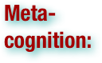

Metacognition is defined as "cognition about cognition", or "knowing about knowing." It can take many forms; it includes knowledge about when and how to use particular strategies for learning or for problem solving. Metamemory, defined as knowing about memory and mnemonic strategies, is an especially important form of metacognition." . . . Metacognition is classified into three components: 1) Metacognitive knowledge (also called metacognitive awareness) is what individuals know about themselves and others as cognitive processors; 2) Metacognitive regulation is the regulation of cognition and learning experiences through a set of activities that help people control their learning; 3) Metacognitive experiences are those experiences that have something to do with the current, on-going cognitive endeavor. (wikipedia.org)

Benchmarking is the process of comparing one's business processes and performance metrics to industry bests and/or best practices from other industries. Dimensions typically measured are quality, time and cost. In the process of benchmarking, management identifies the best firms in their industry, or in another industry where similar processes exist, and compare the results and processes of those studied (the "targets") to one's own results and processes. In this way, they learn how well the targets perform and, more importantly, the business processes that explain why these firms are successful. . . Also referred to as "best practice benchmarking" or "process benchmarking", this process is used in management and particularly strategic management, in which organizations evaluate various aspects of their processes in relation to best practice companies' processes, usually within a peer group defined for the purposes of comparison. This then allows organizations to develop plans on how to make improvements or adapt specific best practices, usually with the aim of increasing some aspect of performance. Benchmarking may be a one-off event, but is often treated as a continuous process in which organizations continually seek to improve their practices. (wikipedia.org)
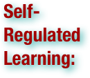

The term self-regulated can be used to describe learning that is guided by metacognition (thinking about one's thinking), strategic action (planning, monitoring, and evaluating personal progress against a standard), and motivation to learn (Butler & Winne, 1995; Winne & Perry, 2000; Perry, Phillips, & Hutchinson, 2006; Zimmerman, 1990; Boekaerts & Corno, 2005). In particular, self-regulated learners are cognizant of their academic strengths and weaknesses, and they have a repertoire of strategies they appropriately apply to tackle the day-to-day challenges of academic tasks. These learners hold incremental beliefs about intelligence (as opposed to fixed views of intelligence) and attribute their successes or failures to factors (e.g., effort expended on a task, effective use of strategies) within their control (Dweck & Leggett, 1988; Dweck, 2002). Finally, students who are self-regulated learners believe that opportunities to take on challenging tasks, practice their learning, develop a deep understanding of subject matter, and exert effort will give rise to academic success (Perry et al., 2006). In part, these characteristics may help to explain why self-regulated learners usually exhibit a high sense of self-efficacy (Pintrich & Schunk, 2002). In the educational psychology literature, researchers have linked these characteristics to success in and beyond school (Corno, et al., 2002; Pintrich, 2000; Winne & Perry, 2000). (wikipedia.org)
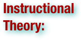

Instructional theory is a discipline that focuses on how to structure material for promoting the education of human beings, particularly youth. Originating in the United States in the late 1970s, instructional theory is typically divided into two categories: the cognitive and behaviorist schools of thought. (wikipedia.org)

Knowledge learned in isolation from the learner's secure knowledge is usually lost. The learner needs to link (bridge) the new learning to existing experiences. CA lessons conclude with a discussion about where these ideas could be used in everyday life. (This is the same as the concept of "scaffolding" in constructivism.) (wikipedia.org)
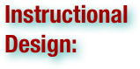

Instructional Design (also called Instructional Systems Design (ISD)) is the practice of maximizing the effectiveness, efficiency and appeal of instruction and other learning experiences. The process consists broadly of determining the current state and needs of the learner, defining the end goal of instruction, and creating some "intervention" to assist in the transition. Ideally the process is informed by pedagogically (process of teaching) and andragogically (adult learning) tested theories of learning and may take place in student-only, teacher-led or community-based settings. The outcome of this instruction may be directly observable and scientifically measured or completely hidden and assumed. There are many instructional design models but many are based on the ADDIE model with the five phases: 1) analysis, 2) design, 3) development, 4) implementation, and 5) evaluation. As a field, instructional design is historically and traditionally rooted in cognitive and behavioral psychology. (wikipedia.org)

Clearly the classroom teacher cannot be the Mediator for every child in the class. If pupils work in groups and discuss their ideas (social construction) there are several benefits: 1) group members act as mediators for each other, suggesting solutions, trying out ideas; 2) individuals feel less vulnerable and more able to participate; 3) random ideas from group-members act as the clues offered by the mediator. Once the groups have discussed their answers, the class is brought together to share their ideas. Again the teacher does not give the answer. They ask one group for their solution, then ask another if they agree or disagree and why. The discussion continues until there is wide agreement in the group. The teacher leads the group towards the answer through questioning. (wikipedia.org)
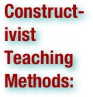

Constructivist teaching is based on constructivist learning theory. This theoretical framework holds that learning always builds upon knowledge that a student already knows; this prior knowledge is called a schema. Because all learning is filtered through pre-existing schemata, constructivists suggest that learning is more effective when a student is actively engaged in the learning process rather than attempting to receive knowledge passively. A wide variety of methods claim to be based on constructivist learning theory. Most of these methods rely on some form of guided discovery where the teacher avoids most direct instruction and attempts to lead the student through questions and activities to discover, discuss, appreciate and verbalize the new knowledge. . . One of the primary goals of using constructivist teaching is that students learn how to learn by giving them the training to take initiative for their own learning experiences. According to Audrey Gray, the characteristics of a constructivist classroom are as follows: 1) the learners are actively involved; 2) the environment is democratic; 3) the activities are interactive and student-centered; 4) the teacher facilitates a process of learning in which students are encouraged to be responsible and autonomous. (wikipedia.org)
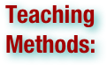

Teaching methods can best be defined as the types of principles and methods used for instruction. There are many types of teaching methods, depending on what information or skill the teacher is trying to convey. Class participation, demonstration, recitation, and memorization are some of the teaching methods being used. When a teacher is deciding on their method, they need to be flexible and willing to adjust their style according to their students. Student success in the classroom is largely based on effective teaching methods. . . For effective teaching to take place, a good method must be adopted by a teacher. A teacher has many options when choosing a style by which to teach. The teacher may write lesson plans of their own, borrow plans from other teachers, or search online or within books for lesson plans. When deciding what teaching method to use, a teacher needs to consider students' background knowledge, environment, and learning goals. Teachers are aware that students learn in different ways, but almost all children will respond well to praise. Students have different ways of absorbing information and of demonstrating their knowledge. Teachers often use techniques which cater to multiple learning styles to help students retain information and strengthen understanding. A variety of strategies and methods are used to ensure that all students have equal opportunities to learn. A lesson plan may be carried out in several ways: Questioning, explaining, modeling, collaborating, and demonstrating. A teaching method that includes questioning is similar to testing. A teacher may ask a series of questions to collect information of what students have learned and what needs to be taught. Testing is another application of questioning. A teacher tests the student on what was previously taught in order to identify if a student has learned the material. Standardized testing is in about every middle school (i.e. Ohio Graduation Test (OGT), Proficiency Test, College entrance Tests (ACT and SAT). Learning can be done in three ways- Auditory, Visual, and Kinesthetic. It is important to try and include all three as much as possible into your lessons. (wikipedia.org)


This form is similar to lecturing. Lecturing is teaching by giving a discourse on a specific subject that is open to the public, usually given in the classroom. This can also be associated with modeling. Modeling is used as a visual aid to learning. Students can visualize an object or problem, then use reasoning and hypothesizing to determine an answer. In your lecture you have the opportunity to tackle two types of learning. Not only can explaining (lecture) help the auditory learner through the speech of the teacher, but if the teacher is to include visuals in the form of overheads or slide shows, his/her lecture can have duality. Although a student might only profit substantially from one form of teaching, all students profit some from the different types of learning. (wikipedia.org)
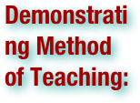

Demonstrations are done to provide an opportunity to learn new exploration and visual learning tasks from a different perspective. A teacher may use experimentation to demonstrate ideas in a science class. A demonstration may be used in the circumstance of proving conclusively a fact, as by reasoning or showing evidence. The uses of storytelling and examples have long since become standard practice in the realm of textual explanation. But while a more narrative style of information presentation is clearly a preferred practice in writing, judging by its prolificacy, this practice sometimes becomes one of the more ignored aspects of lecture. Lectures, especially in a collegiate environment, often become a setting more geared towards factorial presentation than a setting for narrative and/or connective learning. The use of examples and storytelling likely allows for better understanding but also greater individual ability to relate to the information presented. Learning a list of facts provides a detached and impersonal experience while the same list, containing examples and stories, becomes, potentially, personally relatable. Furthermore, storytelling in information presentation may also reinforce memory retention because it provides connections between factorial presentation and real-world examples/personable experience, thus, putting things into a clearer perspective and allowing for increased neural representation in the brain. Therefore, it is important to provide personable, supplementary, examples in all forms of information presentation because this practice likely allows for greater interest in the subject matter and better information-retention rates. Often in lecture numbers or stats are used to explain a subject but often when many numbers are being used it is difficult to see the whole picture. Visuals that are bright in color, etc. offer a way for the students to put into perspective the numbers or stats that are being used. If the student can not only hear but see what is being taught, it is more likely they will believe and fully grasp what is being taught. It allows another way for the student to relate to the material. (wikipedia.org)
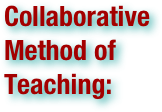

Having students work in groups is another way a teacher can direct a lesson. Collaborating allows students to talk with each other and listen to all points of view in the discussion. It helps students think in a less personally biased way. When this lesson plan is carried out, the teacher may be trying to assess the lesson by looking at the student's: ability to work as a team, leadership skills, or presentation abilities. It is one of the direct instructional methods. A different kind of group work is the discussion. After some preparation and with clearly defined roles as well as interesting topics, discussions may well take up most of the lesson, with the teacher only giving short feedback at the end or even in the following lesson. Discussions can take a variety of forms, e.g. fishbowl discussions. Collaborating (kinaesthetic) is great in that it allows to actively participate in the learning process. These students who learn best this way by being able to relate to the lesson in that they are physically taking part of it in some way. Group projects and discussions are a great way to welcome this type of learning. (wikipedia.org)
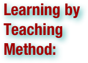

Learning by teaching is a widespread method in Germany, developed by Jean-Pol Martin. The students take the teacher's role and teach their peers. This method is very effective when done correctly. Having students teach sections of the class as a group or as individuals is a great way to get the students to really study out the topic and understand it so as to teach it to their peers. By having them participate in the teaching process it also builds self-confidence, self-efficacy, and strengthens students speaking and communication skills. Students will not only learn their given topic, but they will gain experience that could be very valuable for life. (wikipedia.org)

Bloom's Taxonomy is a classification of learning objectives within education proposed in 1956 by a committee of educators chaired by Benjamin Bloom who also edited the first volume of the standard text, Taxonomy of educational objectives: the classification of educational goals. Although named for Bloom, the publication followed a series of conferences from 1949 to 1953, which were designed to improve communication between educators on the design of curricula and examinations. It refers to a classification of the different objectives that educators set for students (learning objectives). Bloom's Taxonomy divides educational objectives into three "domains": Cognitive, Affective, and Psychomotor (sometimes loosely described as knowing/head, feeling/heart and doing/hands respectively). Within the domains, learning at the higher levels is dependent on having attained prerequisite knowledge and skills at lower levels. A goal of Bloom's Taxonomy is to motivate educators to focus on all three domains, creating a more holistic form of education. A revised version of the taxonomy was created in 2000. (wikipedia.org)
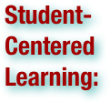

Student-centered learning, that is, putting students first, is in contrast to teacher-centered learning. Student-centered learning is focused on the student's needs, abilities, interests, and learning styles with the teacher as a facilitator of learning. This classroom teaching method acknowledges student voice as central to the learning experience for every learner. Teacher-centered learning has the teacher at its centre in an active role and students in a passive, receptive role. Student-centered learning requires students to be active, responsible participants in their own learning. (wikipedia.org)